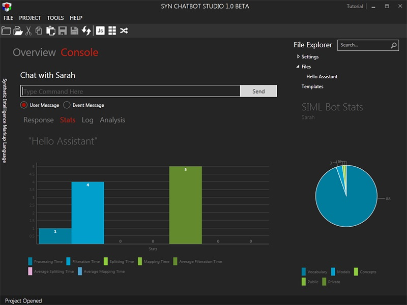

Stats
The Stats tab under the Console tab gives you an idea of how long ( in milliseconds ) did the Bot take to generate a response. There is no need to worry about the response time at the moment since you will soon learn that SIML Bot uses internal caching mechanism to maintain the response speed.

For Bot Studio 1.0 Beta version you can check the speed for:
- Processing – Time taken to study the user input and check for a response
- Filtration – Time taken to filter out words and characters from the user input
- Splitting – Time taken to split the user sentence into multiple inputs
- Mapping – Time taken for transforming a text fragment into an element of another set
- Average Filtration Time – Average of all the filtration time.
- Average Splitting Time – Average of all the splittings/tokenizations time.
- Average Mapping Time – Average of all the mapping time